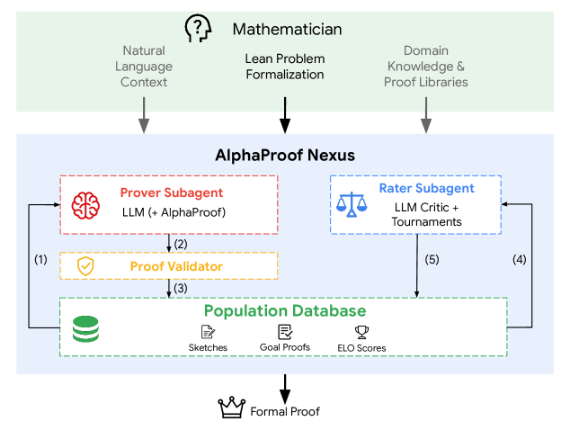
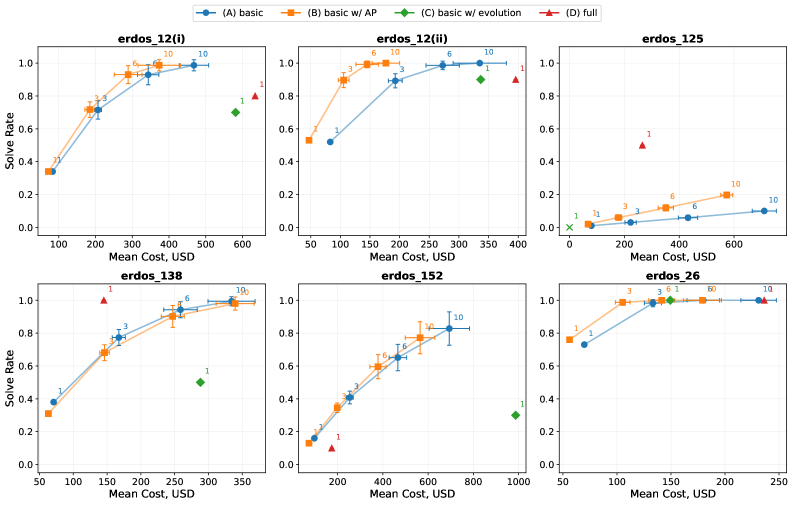

Advancing Mathematics Research with AI-Driven Formal Proof Search
George Tsoukalas, Anton Kovsharov, Sergey Shirobokov, Anja Surina, Moritz Firsching, Gergely Bérczi, Francisco J. R. Ruiz, Arun Suggala, Adam Zsolt Wagner, Eric Wieser, Lei Yu, Aja Huang, Miklós Z. Horváth, Andrew Ferraiuolo, Henryk Michalewski, Edward Lockhart, Codrut Grosu, Thomas Hubert, Matej Balog, Pushmeet Kohli, Swarat Chaudhuri
LLM agents generate Lean proofs verified by its compiler to autonomously resolve open Erdős and OEIS conjectures.
Abstract
Large language models (LLMs) increasingly excel at mathematical reasoning, but their unreliability limits their utility in mathematics research. A mitigation is using LLMs to generate formal proofs in languages like Lean. We perform the first large-scale evaluation of this method's ability to solve open problems. Our most capable agent autonomously resolved 9 of 353 open Erdős problems at the per-problem cost of a few hundred dollars, proved 44/492 OEIS conjectures, and is being deployed in combinatorics, optimization, graph theory, algebraic geometry, and quantum optics research. A basic agent alternating LLM-based generation with Lean-based verification replicated the Erdős successes but proved costlier on the hardest problems. These findings demonstrate the power of AI-aided formal proof search and shed light on the agent designs that enable it.
Problem
LLMs are unreliable for mathematics research because natural-language proofs can contain subtle errors. Formal verification in languages like Lean can filter correct proofs, but the ability of AI agents to solve genuinely open problems at scale had not been evaluated.
Approach
The authors develop AlphaProof Nexus, a framework for LLM-aided formal proof generation in Lean. A basic agent alternates LLM-based generation (Gemini 3.1 Pro) with Lean compiler feedback. The full-featured agent coordinates multiple prover subagents via an evolutionary algorithm with P-UCB selection, uses LLM-based raters, and can invoke AlphaProof (an RL-based theorem prover) as a focused proof tool. Proofs are verified end-to-end by the Lean compiler.

Figure 2: Design of the full-featured AlphaProof Nexus agent. The mathematician provides as input a Lean theorem with sorry for a proof, and optionally, natural language context and additional domain knowledge encoded in Lean. The agent architecture consists of a basic generation-validation pipeline and an optional evolutionary framework. An LLM-based prover subagent attempts to solve the problem
Results
The full-featured agent solved 9 of 353 open Erdos problems (including two open since 1970) at a per-problem cost of a few hundred dollars, proved 44/492 OEIS conjectures, and resolved an open question in optimization theory. The basic agent replicated the Erdos successes but at higher cost on the hardest problems (2-5x more expensive).

Figure 3: Solve rate versus mean inference cost (USD) across six Erdős problem instances. The solve rates are evaluated for the four agents: (A) basic (blue circles), (B) basic with AlphaProof (orange squares), (C) basic with evolution (green diamonds), and (D) full-featured (red triangles). Numeric annotations denote the number of independent attempts K\in\{1,3,6,10\} grouped together; error bars